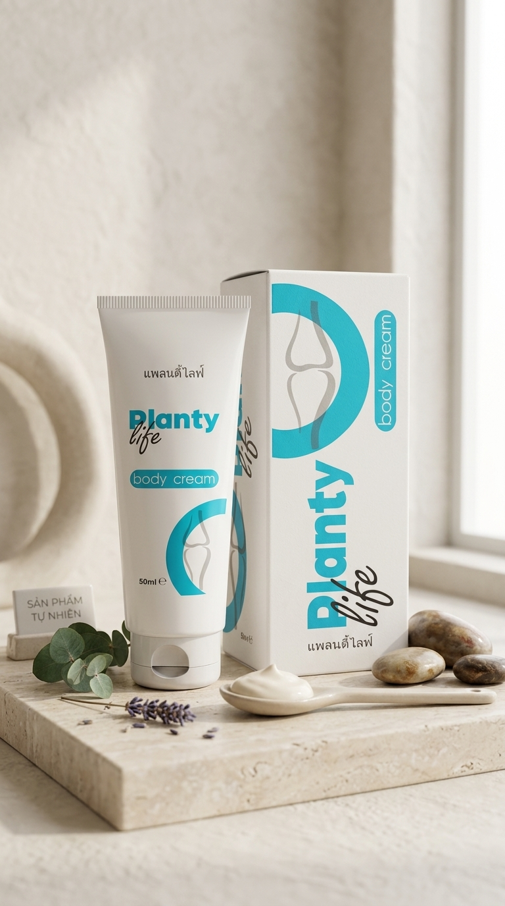

ดูแลร่างกายหลังวันยาว ๆ ด้วยรูทีนที่อ่อนโยนและสบายผิว
สำหรับผู้ที่ยืน เดิน นั่งทำงาน หรือใช้ร่างกายในชีวิตประจำวัน PLANTY LIFE เป็นครีมดูแลผิวกายที่เหมาะกับการใช้ร่วมกับการพักผ่อน การยืดเหยียดเบา ๆ และการดูแลตัวเองอย่างสม่ำเสมอ

PLANTY LIFE คืออะไร?
PLANTY LIFE Body Cream เป็นผลิตภัณฑ์ครีมสำหรับดูแลผิวกาย เหมาะกับผู้ที่ต้องการเพิ่มขั้นตอนการดูแลตัวเองหลังทำกิจกรรมในแต่ละวัน เช่น หลังเดินนาน ยืนนาน ออกกำลังกายเบา ๆ หรือหลังทำงานที่ต้องใช้ร่างกายต่อเนื่อง
ใช้สะดวก
รูปแบบครีม ใช้ง่าย เหมาะกับการดูแลเฉพาะจุดตามความต้องการในชีวิตประจำวัน
เหมาะกับรูทีนดูแลตัวเอง
ใช้ร่วมกับการพักผ่อน ยืดเหยียดเบา ๆ และการดูแลร่างกายอย่างสม่ำเสมอ
ภาพลักษณ์ธรรมชาติ
เหมาะสำหรับคอนเทนต์สายสุขภาพ ไลฟ์สไตล์ และการดูแลร่างกายแบบอ่อนโยน
เหมาะกับใคร?
- ผู้ใหญ่ที่ใส่ใจการดูแลร่างกายประจำวัน
- คนทำงานที่นั่งนานหรือยืนนาน
- ผู้ที่ชอบดูแลตัวเองหลังทำกิจกรรม
- ผู้ที่ต้องการครีมดูแลผิวกายสำหรับใช้ในรูทีนส่วนตัว
- คนที่มองหาตัวช่วยเสริมการดูแลตัวเองแบบไม่ยุ่งยาก
วิธีใช้ในรูทีนประจำวัน
- ทำความสะอาดผิวบริเวณที่ต้องการดูแล
- ทาครีมในปริมาณที่เหมาะสม
- นวดเบา ๆ จนเนื้อครีมซึมเข้าสู่ผิว
- ใช้ร่วมกับการพักผ่อนและการยืดเหยียดเบา ๆ
- ควรอ่านฉลากและคำแนะนำบนผลิตภัณฑ์ก่อนใช้
จุดที่ควรรู้ก่อนตัดสินใจ
ผลิตภัณฑ์ดูแลร่างกายควรเลือกให้เหมาะกับสภาพผิวและไลฟ์สไตล์ของแต่ละคน หากมีผิวบอบบาง แพ้ง่าย มีโรคประจำตัว หรือใช้ผลิตภัณฑ์เฉพาะทางอยู่ ควรอ่านรายละเอียดบนฉลากและปรึกษาผู้เชี่ยวชาญก่อนใช้
คำถามที่พบบ่อย
PLANTY LIFE ใช้เพื่ออะไร?
เป็นครีมดูแลผิวกายสำหรับใช้ในรูทีนดูแลตัวเองหลังทำกิจกรรมหรือหลังวันทำงาน
เหมาะกับคนวัยทำงานไหม?
เหมาะกับผู้ที่ใส่ใจการดูแลร่างกาย เช่น คนที่นั่งนาน ยืนนาน หรือเดินบ่อย
ใช้แทนการรักษาได้ไหม?
ไม่ควรใช้แทนการรักษาหรือคำแนะนำจากผู้เชี่ยวชาญ หากมีอาการผิดปกติควรปรึกษาผู้เชี่ยวชาญ
ซื้อได้ที่ไหน?
สามารถดูรายละเอียดเพิ่มเติมผ่านปุ่มด้านล่างของหน้านี้
สนใจดูข้อมูล PLANTY LIFE เพิ่มเติม?
คลิกเพื่อดูรายละเอียดผลิตภัณฑ์ ราคา และข้อมูลจากหน้าผู้ขาย
ดูรายละเอียดผลิตภัณฑ์